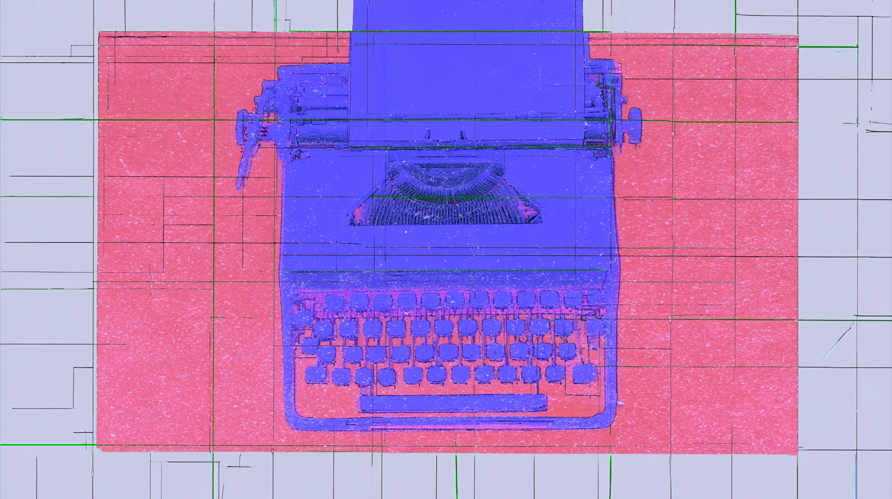

Nigerian music writers have spent a decade watching one marketing term swallow a continent's worth of sound, and this Guardian piece makes the case plainly: "Afrobeats" flattens amapiano, highlife, mara and a dozen nascent genres into export fodder. The sharp detail is Mr Eazi's banku music, a sound with its own kick-drum pattern and fashion culture that simply vanished, undocumented, because nobody marketed it as its own thing.
Track Ten, which runs twice-weekly on the mechanics of pop stardom, takes on the death of monoculture and lands somewhere uncomfortable. Yes, streaming splintered us into "shiver pop" and "medieval rock" silos. But "Choosin' Texas" sat at #1 on Spotify for 129 days, and pop fans swear they never heard it. The argument: that's not algorithmic conspiracy, it's taste. We opted out. And the one person who won't let us is Taylor Swift, who turned ubiquity into a strategy.
Billboard's Kristin Robinson walks through the opening of "Phono V," the Copyright Royalty Board fight that sets US mechanical rates for 2028-2032. The reason it matters: no settlement expected this time. The NMPA and songwriters don't trust Spotify, so this goes to full trial, with bundling (audiobooks, Audible, Apple One) now the central battle rather than standalone subscriptions.
01Music & SceneWriting about music and the culture around it. Criticism, profiles, interviews, and scene reporting, selected for insight rather than news value.
An essay examining why Canada's disproportionately talented music scene often goes unrecognized internationally, and how systemic factors like the MAPL system, major label regional models, and the cultural expectation that success requires leaving Canada contribute to this phenomenon.
SFMOMA front-loaded its biggest-ever gift shop inventory for RM x SFMOMA: Between You and Me, drawn largely from the BTS leader's personal collection of Korean artists like Yun Hyong-keun. NPR Music shows a fan verb ("Namjooning") converting fandom into museum attendance, with first-time visitors reading umber abstractions and seven carved waterfowl as coded tributes to the band.
An essay examining the economics of music journalism in 2026, discussing how the consolidation and closure of major publications has fragmented the industry into numerous independent Substack newsletters, each charging subscription fees that collectively become expensive for readers.
The Guardian profiles Luis Gomez, or JM, who sold vegetables at a Valparaiso market until his mid-sixties and now fronts Los Crack del Puerto, whose fourth record came out this May on cassette. The real subject is Valparaiso itself, a port where boleros, waltzes, tango and cueca have barely changed in generations.
Nirosta Steel, the 69-year-old Steven Hall who ran with Ginsberg, Burroughs, and Arthur Russell before decades in Hong Kong and Bangkok, became an overnight indie sensation off My Skyscraper, an 83-minute Ulyssa release he describes as an album-length dick joke. This Pitchfork interview finds him warning against nostalgia for the downtown and pre-AIDS scenes everyone else fetishizes, insisting the era was terrifying, not glamorous.
In praise of Charli XCX's malfunctioning imperial phase: a Capital One Arena show where a cueing error and a video glitch cracked the performance open. THE FUTURE IS OURS TO MAKE argues the accident was the point, exposing Charli as the only pop star at her level who can't escape real life. The thesis: carelessness becomes great art only by caring immensely.
An essay examining Aesop Rock's 2001 album Labor Days within a series about rap albums that defined 2001 creatively and industrially. The piece traces Ian Bavitz's journey from working at the Howard Greenberg Gallery in New York while developing his underground rap career, detailing his early releases and the development of his distinctive, complex lyrical style.
For the Times' 175th anniversary, Wilco's Jeff Tweedy annotates a 1943 Guthrie essay arguing that music's only job is helping people know each other better. Tweedy mostly agrees, but pushes back on Guthrie's contempt for pop radio and doesn't spare his hero's minstrel past.
Matthew Aucoin's essay on Philip Glass argues that Glass built his legacy on a structural sleight of hand: elevating accompaniment figures, arpeggios and ostinatos, into primary material, creating music that feels perpetually incomplete without a melody that was never coming.
An examination of hip-hop comeback narratives, tracing famous examples from LL Cool J to Kanye West, and arguing that social media and modern accountability culture have made traditional comebacks less viable for contemporary artists.
02Music Industry AnalysisAnalysis of the music business. Deals, streaming economics, rights, and the power dynamics that shape what gets made and who gets paid.
Goulding's suit against TaP Management alleges her managers secretly worked for a company owned by Live Nation, the same monopoly they were "negotiating" touring, merch, and documentary deals with on her behalf. Infinite Catalog reads the fine print: a clause barring managers from steering any client away from Live Nation, conflict of interest written into the contract.
Bollywood still owns a third of India's on-demand streams, but Luminate flags the tell: between H1 2025 and 2026 its streams grew faster abroad (8.2%) than at home (5.1%). That's the Latin and K-pop playbook, where streaming adoption in an emerging market pushes a local sound global while Gen Z at home fragments toward Pop, EDM, and artist-driven scenes outside the film system.
Billboard traces how Concord Music Publishing started signing hyperpop producers like Oklou, Frost Children and Underscores back in 2021, well before the sound climbed the charts. Those bets are cashing in now: Oklou co-produced for Karol G, Aksel Arvid's PinkPantheress remix hit No. 6. A&R exec Jeremy Yohai frames it as anticipating trends rather than chasing them, a rare model in the TikTok era.
Commercial momentum and equal treatment move at different speeds, Hypebot argues, pointing to Monterrey sisters The Warning. The trio topped Billboard's Mainstream Rock Airplay chart with "Kerosene," sold out three Fonda nights, and booked a Mexico City stadium headline for 2027, yet still describe a "constant battle" over belonging. Rock's live test keeps asking women to re-prove what should already be settled.
The courts will take years; the price gets set now. Zinstrel reads two moves in one week: the Third Circuit's first appellate ruling against AI training on fair-use grounds (Ross v. Thomson Reuters, non-binding on the Suno and Udio cases), and independent publishers demanding the song be valued at least as highly as the recording. Whoever builds the attribution tools (Warner bought Sureel, Sony has CLEWS) controls how the money splits.
03Music RecommendationsNew and recent music worth hearing. A featured pick plus additional recommendations, each with brief context and a link to listen.
Shatter the Standards frames Dawn Richard's latest as the next chapter in a career spent singing through characters, from the Danity Kane manga superhero she drew for Diddy to D∴WN, the triangle-spelled solo persona staking a claim to revolutionary R&B. creole culture centers on a New Orleans monarch bearing her likeness, reckoning with the city she fled for Baltimore after Katrina.
REC 01
Stevie Wonder
My Life Story of Love
♪ Soul
A Songs in the Key of Life outtake that sat on a shelf for half a century, released on the album's 50th anniversary and mixed by two original engineers. Soulpolitan has rotated it the most of the four-track EP: Stevie planting a woman in his garden of love to turn her into a flower, a twisted conceit sung over bossa, with lyrics by Susaye Greene of The Supremes, who co-wrote "I Can't Help It" for Michael Jackson.
Beat Connection found this scrambled its head on a second listen: unpredictable even after already hearing it. The powerful lift-offs resolve efficiently rather than feeling glib, the subs get a cleansing workout, and the momentum is giddy, varied, and ravey without everything sounding early-nineties. "How to Build a Bassline" lands as the funniest track encountered in an age.
One of the first jazz big band records from Egypt, Dinner Music frames it as a response to the American jazz scene of the 60s and 70s, drawing influences from Mongo Santamaria to Randy Weston to Sun Ra while asserting Arab musicians' own history within the Western tradition.
Shatter the Standards ties Duke Deuce's crunk revival to Noble Drew Ali's Moorish Science and a century of contested indigeneity, threading those messages through his buck anthems. Deuce, who fell asleep to the same drums his father Duke Nitty made for Gangsta Blac, leans into buck's territorial edge, the older Memphis form crunk grew out of.
The Line of Best Fit flags this among a trio of brilliant Irish records landing on the same day: Gilla Band's noise-rock ravages here, alongside Trá Pháidín's boggy post-rock and Gurrier's pounding post-punk.
The final track from DePlume's instrumental EP 'Dear Children of Our Children, I Knew: Epilogue' on International Anthem, 'Glass' sends his saxophone unfurling with understated verve over a trance-like electronic loop, Shahzad Ismaily's bass, and Tcheser Holmes's drums. Recorded on a Brooklyn off day mid-tour, it captures a trio rapport built over weeks playing 'A Blade Because A Blade Is Whole', DePlume framing it around endurance: how something shattered still refracts light.
The duo of John Thayer and Lea Thomas swirl together folk, dream pop, post-rock, and shoegaze, putting a strong personal stamp on well-worn sounds. Futurism Restated hears a higher-fidelity Grouper and a more blown-out Mazzy Star, plus telling details: an unexpected twinge of Auto-Tune on the Total Blue-like 'Go Easy,' feedback singeing the edges of 'What Gathers at Dusk,' and the dubbed-out murk of 'Night Garden' echoing Talk Talk.
The lead single from Honest Feeling Album finds the Japanese producer working as frontperson of HaHa and the Hairpins, a jazz band assembled for a 2024 live session. Kei Matsumaru's skronky sax anchors the track with a supremely sticky horn hook, part of a record that stuffs free jazz, proggy pop, and hyperpop-adjacent electronics into every song until they burst.
Per Outer Frequencies, the group's most ambitious album traces the movement of Black music from Africa through the Caribbean into London, turning that history into something exuberant and soulful. Further proof that jazz doesn't have to be stuffy.
A critical essay comparing audience and critical reactions to the films Digger and Verity, with a broader meditation on how critics respond to complex, unconventional art. The piece references an earlier essay about Megalopolis and critiques the tendency to dismiss "weird" or plot-hole-heavy films without engaging with their artistic merit.
Inigo Laguda starts with a missed deadline and a scooped premise, then arrives at the point he actually wanted to make: we are living in an age of post-satire. As audiences grow hyperaware of sociopolitical reality and more disconnected from any sense of control over it, entertainment has become less a mirror than a lucid dream, using Digger and Kendrick's Super Bowl set as the case studies.
An essay examining how algorithms have dismantled the era of shared monoculture, replacing it with individualized cultural experiences. The piece argues that brand meaning and cultural moments now operate differently, with sustained output and niche relevance replacing the mass-broadcast model that once defined popular culture.
Thought Enthusiast profiles Ira Madison III — novelist-in-progress, podcaster, culture fixture — on how he became a better interviewer by stopping trying to seem cool in the room. The shift: listening for what's actually being said rather than waiting to ask the next question. He credits the Housewives, of all places, with teaching him the difference between genuine curiosity and dressed-up self-insertion.
05Sound on Sight Video ArchiveOne music video from the archive in each issue, ranging from a few months to sixty years old, with a short note on why it holds up.
▶
Jim WIlson — "Center Core Never More"
Early 90s · instrumental rock
Jim Wilson plays guitar the way you'd expect from someone who spent years alongside Harvey Mandel and Rcollins: dense, exploratory, allergic to the tidy hook. "Center Core Never More" is the kind of early-90s instrumental that got buried under grunge, worth pulling back up for the way the tone keeps mutating under your ear.
SOS 01
The Stripes
Ecstasy (Plattenküche)
♪ 1980
The singer is Gabriele Kerner, three years short of '99 Luftballons.' The Stripes were her first band, formed in Hagen in 1979 and finished by 1982. The show is Plattenküche, a WDR variety hour with fountains, a filing cabinet that toppled every week, and a working kitchen where the co-host cooked dinner on air.
Nick Uff, a gardener by trade, drew it frame by frame on 16mm without a storyboard, letting the film go where it took itself. That scratchy hand-made animation sits over an arpeggio Adrian Utley couldn't get a sequencer to play, so he recorded the notes one at a time and edited them into the loop.
Before Tom Rubnitz became downtown New York's patron saint of camp, he helped make this: a performer named Frieda rapping backed by a chorus line of dolls, production values scraping the floor on purpose. 'Plastic Rap' is Lower Manhattan circa 1980 deciding that cheap and ridiculous could be an aesthetic, not a limitation.
Spike Jonze gives Ludacris a pair of prosthetic Popeye arms and aims them at a man who won't observe bathroom etiquette. Interestingly enough, the man is Fatlip, the Pharcyde rapper whom Jonze had filmed four years earlier narrating the worst day of his life. In 2004, he is still the one getting hit.
Zürich, 1981. Mother's Ruin had been going since 1978, early enough that Swiss punk barely existed, and director Paul Grau shot 'Lost in Town' for the 'Want More' LP while the scene was still inventing itself. Snarl from a country nobody files under snarl.
Out of Los Angeles, Dorothy Fuzz stack sweet vocal harmonies over trippy psych and title the album 'Mad Art For A Mad Age,' which about covers it. '1 2 3 Understand Me' keeps reaching for connection and dissolving into haze before it can close the gap. Sunshine on top, something woozier underneath.
Jonathan Glazer sends a man stumbling through a tunnel, getting hit by cars over and over, muttering Thom Yorke's looped prayer. Each impact lands harder than the last until the final one doesn't. UNKLE and DJ Shadow built the track from dread and strings; Glazer turned it into a parable that earns its resurrection.
Spike Jonze films it like a pratfall in slow motion: Fat Lip narrating his own worst day, every small humiliation landing square on the beat. It's tragi-comedy played dead straight, an itemized series of humiliations played with a stand-up's timing. The Pharcyde's sharpest tongue turns self-loathing into the funniest, saddest three minutes the West Coast underground ever produced.
A Romanian pop grande dame, who'd spent five decades exploring the outer boundaries of samba, soul, and disco-pop, takes Pulp’s 'Common People' and sings it in her own language. The pairing is the pleasure: a voice raised on the state airwaves wrapping itself around a Britpop anthem about class.
06All Music is Local Music (and a Lot of It’s Folk)Musicians from Veracruz to Shanghai revive old folk forms or rework them with electronics, club music, metal and country, as data questions folk's old canon.
In Veracruz, the clock tower on the central plaza plays "La Bamba" every hour, and it isn't the Ritchie Valens version. The original belongs to son jarocho, the region's music, played at fandangos where two dozen jarana players can stretch a three-chord song to 15 minutes. By the 60s and 70s it was out of favor; Gilberto Gutierrez of Mono Blanco remembers people calling it "the music of drunken people." John Burnett finds it thriving again, from Tokyo to Los Angeles, and drawing young Mexicans who also listen to reggaeton. Gutierrez's explanation: "We all need to belong to something."
The major categories at the Latin Grammys normally sound a lot like reggaeton and pop. For the 27th edition, NPR's Felix Contreras hears a shift toward traditional folk. Uruguayan veteran Jorge Drexler's nominated album fully embraces candombe, which Contreras calls "a much-overlooked musical impact of the slave trade." Nineteen-year-old Argentine Milo J, known for hip-hop, turned to chacarera, milonga and tango on La Vida Era Más Corta. Contreras hears the nominations as the result of a pushback against reggaeton's pan-Latin sound, a subtle trend that seemingly reached critical mass.
Few people dancing to Tercet Imperial at Poland's OFF festival likely realise they're hearing the oberek, a traditional dance in triple metre. Jakub Knera finds a cluster of groups hiding it inside acid synths, hip-hop grooves and Chicago footwork, and the disguise is deliberate: Mateusz Kowalski wants listeners "to be surprised when they find out that this is traditional material." For drummer Gary Gwadera's generation, traditional music was "initially something to be ashamed of." Since 2020 the interest in rural music has coincided with a broader "peasant turn" in Polish culture, and Gwadera says the music is increasingly treated as "the forgotten history of the majority of society."
33EMYBW, the Shanghainese producer who has played Berghain and spent a solar eclipse with Björk in Iceland, makes experimental club music that can turn brutal. On her EP Amalgamate, Jake Newby of the Concrete Avalanche newsletter hears her warm it with gamelan rhythms, temple chants, traditional Chinese percussion and folk singing from the Dong ethnic minority, a form she has worked with before. The tradition arrives in bursts inside the club track. Her own description of the EP's creatures: "hybrid monsters, pure adventure."
"My big thesis is that heavy metal has become a form of folk music in the past couple of decades," says Tom Templar of Green Lung, the British band whose Necropolitan is its fourth album devoted to the folklore of the isles. Both are riff-based, he says, and both reinvent what came before. Michael Hann traces this folk-horror strain to two cult bands of the early 80s, Witchfinder General and Pagan Altar. Shonagh Brown of Newcastle's Druidess has a reason for its return: people spend so much time in front of screens that they want to shift towards the natural world, and folk traditions connect with that.
Alt-country began in the late 80s and early 90s, when former punks like Uncle Tupelo picked up fiddles, banjos and acoustic guitars. Michael Hann finds a new generation drawing on it on both sides of the Atlantic, from Florry and Ratboys in the US to Brown Horse and Little Grandad in the UK, musicians who found it themselves rather than in their gen X parents' cars. Ratboys' Julia Steiner describes a desire to embrace "earnest storytelling and our humanity" in the face of "corporate suits drooling over AI." Like Druidess's Shonagh Brown, Hann points to screens: in a culture that sits in front of them all day, music that celebrates raggedness resonates.
Twisted Teens, the New Orleans garage-rock duo behind Blame The Clown and Florida Water Blues, is one of Steven Hyden's favorite bands of 2026. In a Zoom conversation for Evil Speakers, Hyden talks with singer-songwriter Caspian Hollywell, who is now centered on writing "bangers" while subtly aping the visual aesthetic of Cheap Trick. The folk link is in Hollywell's own history: his long, winding journey in life and music included riding the rails (literally) and playing and learning about old time traditional music.
Lavender Country's 1973 album was full of frank, funny songs about gay life, but at the time few knew it existed, and its 2014 reissue put things in focus for a new generation of queer Americana artists. Bandcamp Daily argues that the scene they built holds together because its artists actually embrace the label, and because they need each other. "We're also building our own systems," says Mya Byrne, who describes nearly being run over on the Sunday of Pride. Andrew Sa calls country "maybe one of the last frontiers left to queer," a genre he loved as a child and left because he couldn't see himself in it.
Twelve of the top 25 records on Rolling Stone's list of the best folk albums came out in the 1960s, and another 11 in the 1970s. Megan DeMatteo, writing for Chartmetric's How Music Charts, sets that canon against the platform's data: artists from India, Mexico, Chile, China and Australia are among the fastest-rising folk acts of May 2026. Folk Alliance International asks only that folk represent a community, and its deputy director Alex Mallett calls Bad Bunny's Super Bowl halftime show a legitimate expression of folk values. Josh Kohn, director of the center that sponsors the Baltimore Old Time Music Festival, says the old musical "North Stars" "just don't have the same sort of power."
07StorylinesStandalone features that follow one story in full. Each gathers the coverage as it appeared, annotated and in sequence, with a written introduction.

Watching the Watchmen: On AI Composition and Detection
21 articles · story collection
After AI slop overwhelmed their services, the platforms struck back, with Substack releasing an AI detection tool and LinkedIn adding a button that lets users report slop. Whether this was good stewardship or evidence of a witch hunt is an open question, and we dive into the debate with 21 articles that wrestle with how we value AI (and human) writing.
Me and the Devil: Fenix Flexin's AI Authorship Fight
11 articles · story collection
Maybe Fenix Flexin won't be remembered as the Elvis Presley of AI music, but his track "Rubberz", which delivers street-rap verses over '80s synth-pop, reached the Hot 100, drew months of accusations, and ballooned into one of the biggest stories of 2026. We track the story's twists and turns, and consider where we're going (and where we've been).
Between a billion dollar Michael Jackson biopic, a blockbuster Madonna album, and the return of "Wonderwall" and "Mr. Brightside" to the charts, 2026 could be defined not so much by what we created, but by what we remembered. We survey the landscape, and consider what it means when culture turns into a hall of mirrors.
For years, the labels sued to stop fans from generating AI covers of licensed content, and then Universal and Spotify signed the deal for a tool that does just that. Beneath the product announcement lies the story of how billion dollar catalog acquisitions have created incentives for the industry to recycle the catalog rather than invest in new music.
Miles was the avatar of cool who kept detonating his own styles, a privileged Black artist who declined every story offered to him about privilege or suffering, and both an undeniable genius and a man who hurt others, particularly women. And a hundred years on, he remains a mystery and a contradiction, which is probably what he would've wanted.
07Going DarkArtists, writers and fans retreat from the feed: masked bands, unsearchable names, phone-free shows, AI personas, and the case that opting out is a luxury.
AYA, a duo with an Afro-Khaleeji sound, went viral with 'Ma Tnsani (Yalla Habibi)' without giving up their anonymity. In a rare Q&A with Clash's Robin Murray, they say that anonymity "keeps the music at the forefront," and when Murray raises how metrics- and image-oriented the dance scene can be, they call both "surface level tools." "When access to information is everything," they argue, choosing "to let people meet the music before they meet us goes against the grain."
PRESIDENT were on the bill at Download, the UK's biggest rock and metal festival, before releasing a single song. Hypebot's Jeremy Young calls it a reversal of the usual order where most bands build an audience and then pitch festivals afterwards. The members still haven't publicly identified themselves, and joining the mailing list means joining the "campaign." PRESIDENT's first US show, at New York's Gramercy Theatre in December 2025, sold out in less than a minute.
The Philadelphia duo @ is pronounced "at," which makes them, as Quinn Moreland puts it in The Guardian, a tough Google. Victoria Rose and Stone Filipczak make art-folk from acoustic guitar, woodwinds and vocal harmonies, and their second album, Autosmile, is their first for 4AD. They wrote and recorded it separately at home, turning down offers of studio time. "It's easier to get something to where you want it to be when nobody's watching you," Rose says, "and that includes Stone."
Aidan Yagu, an AI rapper whose name is an anagram of "A Guy and AI," says the idea of his mask "was built to turn me into no one." Marcus Lawrence at Zinstrel argues that for AI artists, choosing a name can become an argument about authorship. Since Yagu's music has two authors, his own face would mislead: "A photo of me would have been actually the most dishonest option." JP Asher, who credits AI tools with giving her voice back, reaches the opposite conclusion. As a trans woman, she says an alias would be "like putting the mask back on."
In Liu Cixin's Three-Body Problem trilogy, the universe is a dark forest, where any civilization that reveals itself gets wiped out. Erik Hoel, at The Intrinsic Perspective, argues that AI has made culture that kind of place for scientists, writers and mathematicians. The case starts with Navier-Stokes, where a letter from NYU's Tristan Buckmaster, in Hoel's reading, implies OpenAI rushed to scoop work Buckmaster and a colleague had spent a year on. Sharing an unfinished idea used to be safe because copying it took the same human effort; for Hoel, all it takes is a prompt. Hoel's answer is defense: "leak nothing, give away nothing."
Phoebe Bridgers banned phones, plus AirPods, smartwatches and Meta glasses, from all 45 dates of her Lost Tour. At Barclays Center, Lindsay Zoladz of The New York Times reports, Bridgers framed the ban as self-preservation: phone-free shows were the only way she could comfortably return to the stage with songs this personal. When she brought out the rest of boygenius for an unannounced reunion, a moment normally filtered through thousands of screens, the crowd was present for its own experience. Still, three men talked through most of the set until Zoladz asked them to stop, midway through a song about Bridgers's father, a reminder that taking phones away still leaves the people.
Eugene Healey opens with a friend's 27-year-old sister, who spends a small fortune on film for her analog camera, then leaves the negatives at the lab and has the digital files emailed to her. In Considered Chaos, Healey argues that the analog revival "did not take place" and that going offline works as a status symbol because most people can't afford it. For anyone told a degree is worthless, Healey writes, a personal brand is increasingly seen as a survival strategy, and analog is "the dupe we can actually afford." Healey's fix is structural: get the property market under control and invest in live music.
Carolyn Yoo, writing in SEE YOU, wants artists and introverts to go "quietly public": keep a world of your own online, such as a blog or an artist site, and set your own rules there for what is public and private. Name, face and voice are optional. Being "loudly public" means showing your face, talking to the camera and sharing on multiple platforms as often as possible, and in Yoo's terms it runs on performance. Eugene Healey, in Considered Chaos, expects everyone to stay on social media; Yoo keeps it as a place to visit. When finished work calls for a loud launch, Yoo does the arena tour, then heads back to the quiet home.